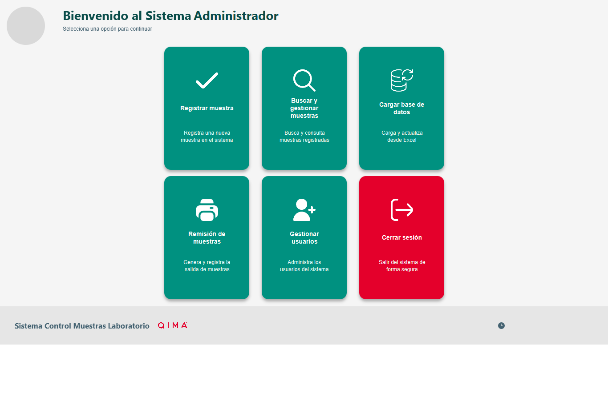
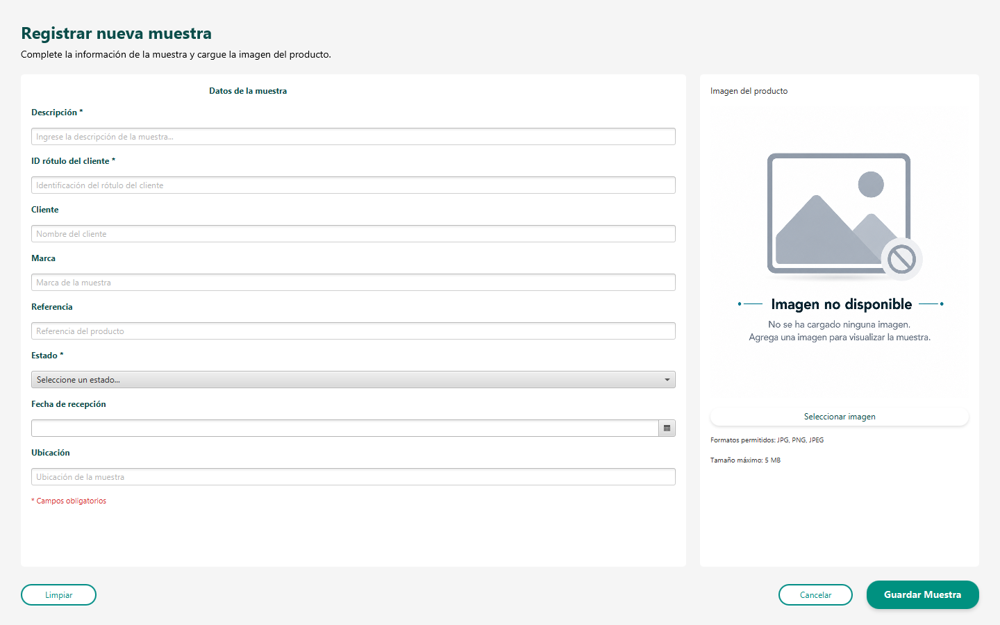
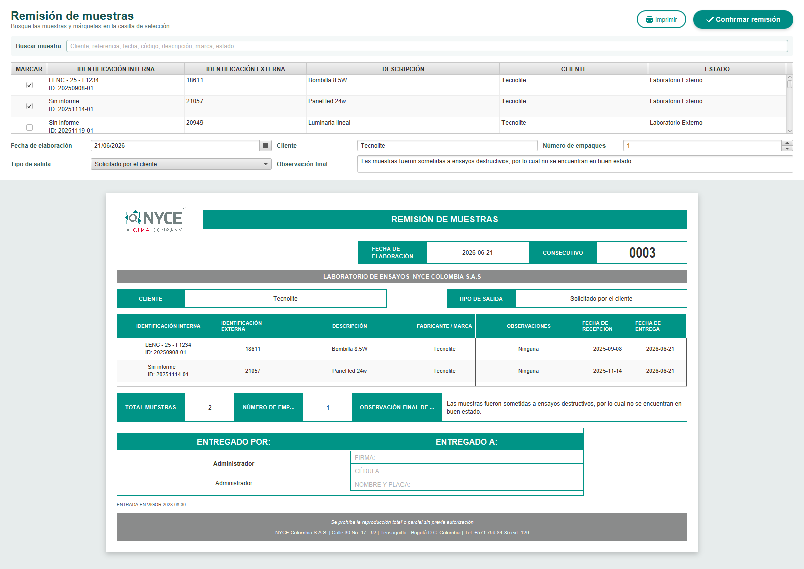
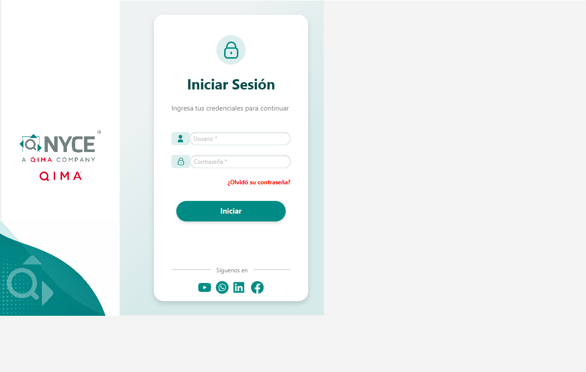
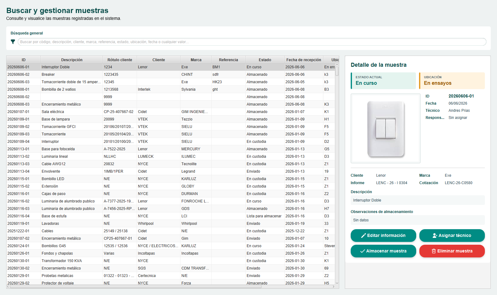
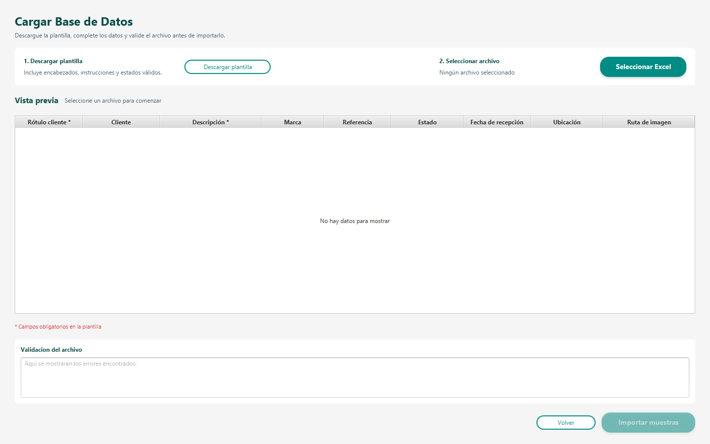
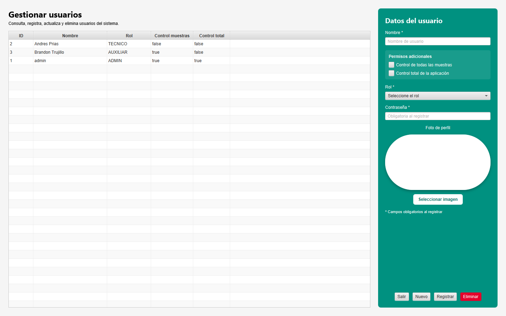

Registro de muestras
Identificación, cliente, marca, referencia, estado, ubicación, fecha, custodio y fotografía.
Una aplicación de escritorio para registrar, ubicar, asignar, consultar y remitir muestras de laboratorio con permisos por usuario y trazabilidad documental.

El sistema consolida la información técnica, la custodia, los responsables y los documentos de salida sin depender de registros dispersos.

Selecciona una etapa para recorrer la experiencia real construida.

Captura datos del cliente, producto, estado, ubicación, fecha e imagen.
Identificación, cliente, marca, referencia, estado, ubicación, fecha, custodio y fotografía.
Consulta general, panel técnico, informe, cotización, responsables, remisión y acciones contextuales.
Custodia, ensayo, almacenamiento, disposición final, laboratorio externo, envío y destrucción.
Checkbox, búsqueda avanzada, múltiples muestras, consecutivo R0001 e impresión original/copia.
Roles, fotografías, permisos de control de muestras y control total.
Plantilla, validación de columnas, vista previa y actualización de la base.
La remisión no es sólo una impresión: es un evento transaccional ligado a la muestra y a un documento local.
Las seis tarjetas permanecen visibles; las funciones restringidas se habilitan únicamente cuando el usuario tiene autorización.
| Capacidad | Administrador | Supervisor | Control muestras | Técnico / Auxiliar |
|---|---|---|---|---|
| Consultar muestras | ✓ | ✓ | ✓ | ✓ |
| Registrar, editar y almacenar | ✓ | ✓ | ✓ | Según permiso |
| Generar remisiones | ✓ | ✓ | ✓ | — |
| Finalizar ensayo asignado | ✓ | ✓ | ✓ | ✓ |
| Administrar usuarios | ✓ | ✓ | — | — |
Haz clic sobre cualquier captura para verla a tamaño completo.





La solución entrega control operativo, trazabilidad documental, persistencia local y una base clara para futuras integraciones o reportes.